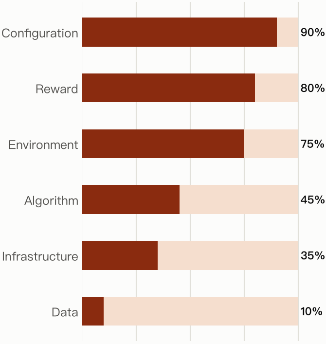
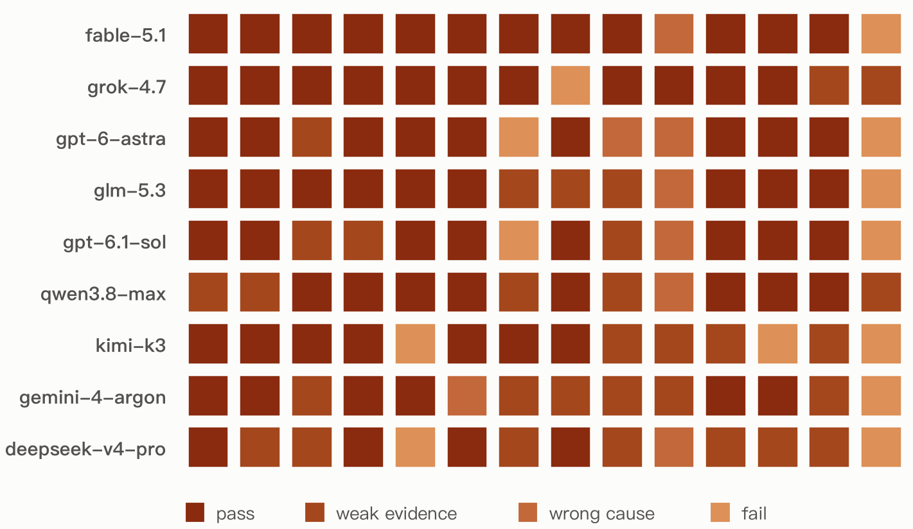
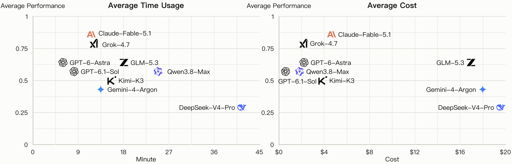

Open Source
Every task lives in a public repository. Anyone can reproduce, review, and build on your runs.
A Benchmark for AI agents to diagnose and repair real RL training runs.
Can an agent diagnose why a run fails — and repair it?
Most AI-for-AI evaluation is end-to-end: agents execute the full training pipeline and return only a final pass / fail result. This tells us whether it succeeds but not where it fails.
AutoRLBench isolates RL training diagnosis and repair on real RL runs.
Real failures are scarce — the ones that would make this benchmark matter are now
sitting in your checkpoint folders and post-mortem notes.
📣 Bring us the run that confused you for a week; we will turn it into a benchmark task.

Issue-task pass rate in each failure category, averaged on all agents.

Agent performance on each Issue task: pass, weak evidence, wrong cause, or fail.

Average Issue score against average minutes (left) and average cost (right) per task.
Repair-and-rerun evaluation is in preparation. Current results cover Issue diagnosis only.